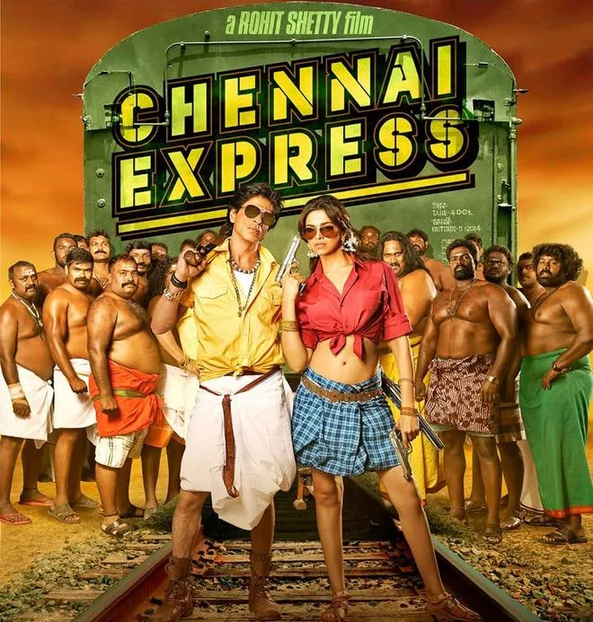
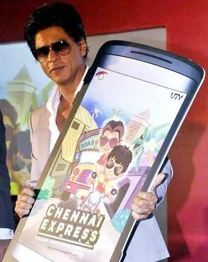
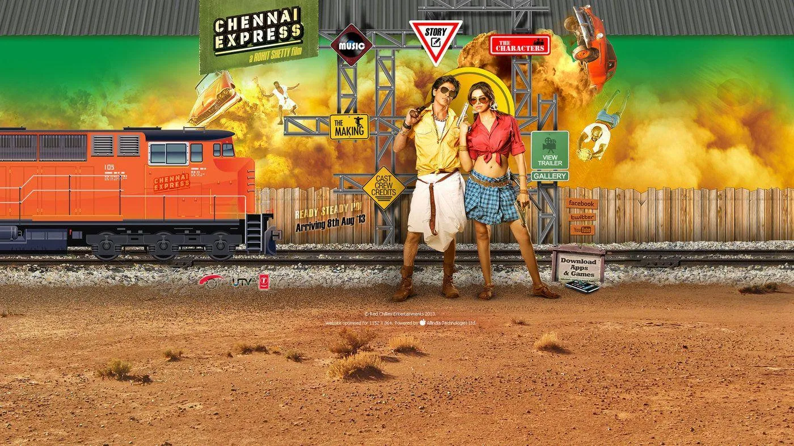

The Final Thesis · section 31 of 92
CHAPTER 2 — 2013: CHENNAI EXPRESS AND THE AUDIENCE THAT MOVED THE TRAIN



5
When fans stopped being a number on a dashboard
If Ra.One was the attempt to build a digital universe around intellectual property, Chennai Express was the demonstration that an audience could become an active part of the campaign's mechanics.
The train is the perfect metaphor.
It moves because people participate.

Persistent Systems
+1
The virtual train journey was designed to progress through audience participation. Fans' tweets and activity contributed to the campaign's movement and milestones, creating a collective experience around the film's journey.
It was a simple concept with a powerful psychological mechanism.
A fan could see that participation mattered.
The campaign also extended into browser games, mobile gaming, interactive video, karaoke, SMS and missed-call experiences, and a wider system of audience analytics and social listening. The case study reported more than one billion tweet impressions, over 750,000 tweets, participation from more than 25 fan clubs and 18 brand associations. These are campaign-reported figures, not independently audited statistics.
Persistent Systems
+1
The train was not simply a promotional image.
It was a participatory system.
The audience's activity became part of the narrative of the campaign. The campaign offered fans a shared objective, visible progress and a reason to bring others into the experience.
This is where the Ra.One and Chennai Express experiments become especially important when studied together.
Ra.One explored the potential of an entertainment property to exist across formats.
Chennai Express explored the potential of a campaign to function as a shared experience that audiences could actively advance.
Together, they suggested a new model:
The Bollywood digital flywheel
Film / Character IP
Creates a world fans want to enter.
Interactive experience
Games, stories, challenges and participation.
Fan community
Creates, shares, competes and brings in new audiences.
Data, partnerships and new IP
Informs further experiences, products and storytelling.
A continuing ecosystem—not a one-time release campaign.
This is the model against which the next five years should be examined.
Not because every film needed to become a technology experiment.
But because two of Khan's major campaigns had already demonstrated the creative and commercial possibilities of making the audience an active component of the entertainment product.
And then came the apparent retreat.